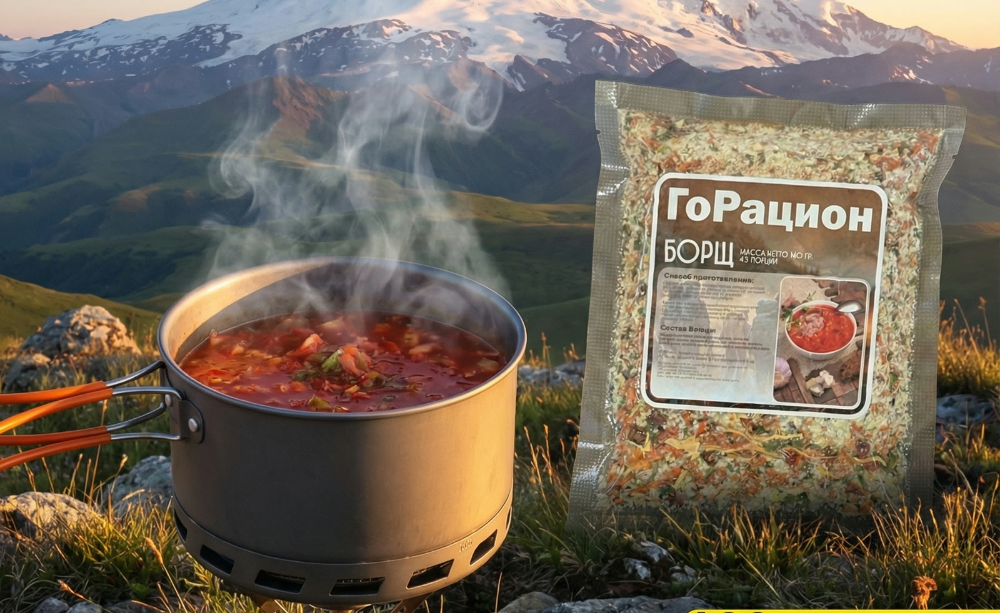

Своя еда в горах
С начала 2021 года мы собрали свою небольшую команду и с тех пор ходим в горы только вместе.
Как все туристы, которые знают, что такое тяжёлый рюкзак, мы мечтали о вкусной еде в походе. Сначала пробовали разные варианты, потом взялись за сушку продуктов: смешивали ингредиенты, экспериментировали. Годы ушли на то, чтобы отобрать лучшие рецепты.
Друзья и знакомые, попробовав нашу еду, стали просить: «Сделайте для нас!» Так родилась идея бренда ГоРацион. Мы прошли все формальности: разработали документацию, получили экспертизы и сертификацию, купили оборудование, и теперь выпускаем готовые наборы.